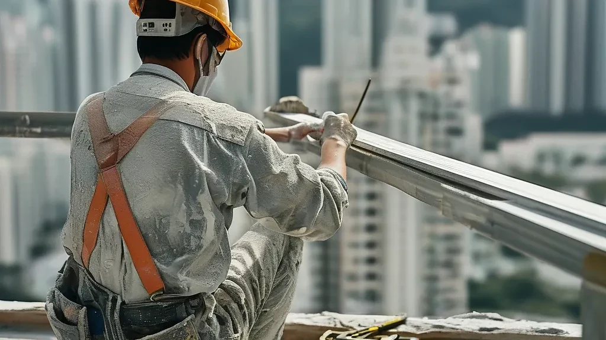
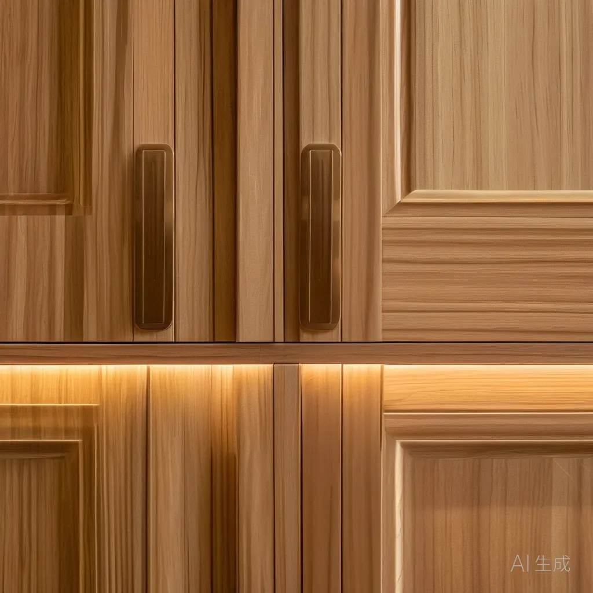
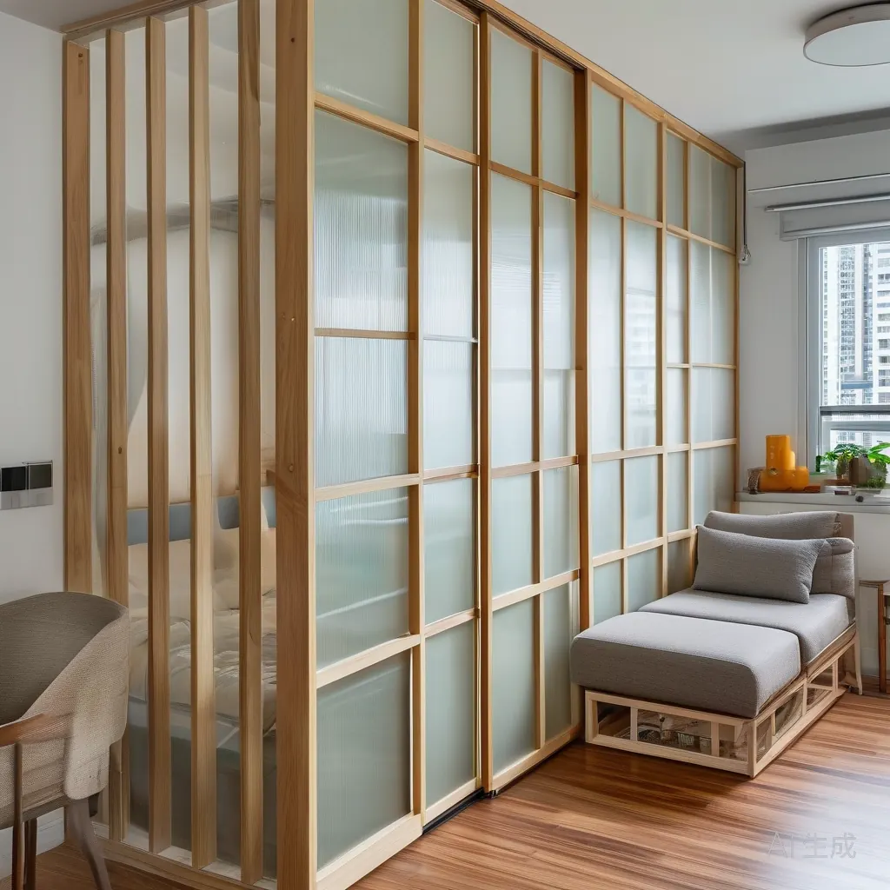
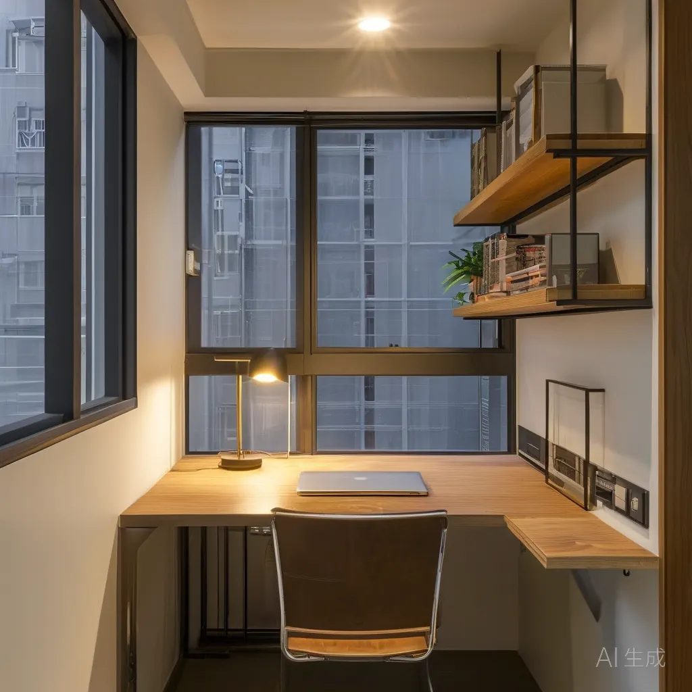

上水78呎天台加建被罰12萬：祥叔教點改裝先唔會變僭建
📍 場景：上水｜主訪：祥叔（觀塘 30 年以上木行老行尊）｜記錄：張丹楓｜整理：雲蕾｜日期：2026 年 11 月 19 日｜WhatsApp 報價：852 5190 2328
序幕：十二萬七千七百五十蚊，買咗一句「唔係裝修」
2026 年 11 月 18 日上午 11 點，政府新聞公報刊出一則稿，講緊上水馬會道一幢商住大廈嘅事。涉事嘅係一個面積大約 78 平方米嘅天台搭建物，冇事先攞到屋宇署嘅批准同同意，屋宇署根據《建築物條例》第 24（1）條發出清拆令。業主冇履行清拆令，事後喺 2026 年 11 月 17 日被粉嶺裁判法院定罪，判罰款合共 122,750 元；當中 57,750 元，係就罪行持續嘅日數所判嘅罰款。
同一日，屋宇署發言人講得好直白：僭建物可以導致嚴重後果，業主必須盡快遵從清拆令；一直唔遵從嘅，署方會繼續嚴厲執法，包括再次提出檢控。按《建築物條例》，無合理辯解而唔遵從清拆令屬嚴重罪行，一經定罪最高可罰款 200,000 元及監禁一年，仲可以就罪行持續嘅每一天，另罰款最高 20,000 元。
我哋做全屋定制，見過好多客人拎住個靚靚嘅天台相，話「呢度擺個書房就完美」。雲蕾聽完第一句通常係：「你嗰個天台有冇批文？」答案通常係「應該冇問題㗎啩」。嗰個「應該」，就係今次新聞嘅起點。
第一幕：祥叔嗰句「裝修同加建，差一張紙」
祥叔喺觀塘做木行三十幾年，近兩年主要做公屋同居屋嘅訂造家俬。嗰日我哋去咗佢喺觀塘嘅工場，佢一邊刨木板一邊同我哋講：「新聞我睇咗。嗰個業主最慘唔係罰款，係佢個天台可能又要拆返。錢兩次花。」
「你哋行裝修行，客人分兩種：一种係『整靚佢個家』，一种係『整多一個房出嚟』。第二種就一定要停低問清楚。你哋公司肯唔肯做，係公司嘅招牌；做得靚，唔代表做得啱。」
「祥叔，業主通常唔會分得咁清。他哋會話：屋頂封咗、有窗、有冷氣機位，邊個話唔得？」
「我哋三十幾年都見到。封咗頂、開咗窗、加咗間隔，做到幾靚都係僭建。屋宇署睇嘅唔係好唔好睇，係有冇批。所以你哋公司第一步，唔係度尺，係睇契約同圖紙。」
祥叔講得唔係玄學。《建築物條例》管嘅係樓宇嘅結構、用途同安全，屋宇署有權就未經批准嘅搭建、拆改同改用途發清拆令。室內裝修同「加建」之間嘅分界，就喺呢度：換櫃、鋪地磚、刷油、換電燈，係裝修；砌磚牆封上天台、開新窗、改動主力結構，隨時已經越咗界。

第二幕：想真係多間房，我哋有另一條路
我哋唔會話「加建唔得」咁完。祥叔教咗一個老辦法：先問清楚業主真正想要嘅係乜嘢。好多業主講「想要多間房」，實際上想要嘅係「有個位可以坐低做嘢、有個位可以摺衫、有個位可以放文件」。呢啲位，唔一定需要砌磚。
「譚生嗰個情況我哋見過好多：單位本身得大約 380 呎，主人想喺露台位擺張書枱。砌磚房係最直接，但砌完就變咗另一件事。」
「如果你要嘅只係『一個位』，我哋可以做法室：用 2×4 杉木龍骨，每 30 厘米一條，雙面鋪 12mm 高密度板做背板，中間夾 8mm 磨砂玻璃做移門。全部係『可移動設計』，唔鑽牆、唔拆主力牆、唔改公用喉，日後要搬走就整件拆走。」
祥叔特別強調咗三個位：廚房櫃用 18mm 多層實木夾板做櫃身，304 不鏽鋼鉸鏈配氣壓桿；衣櫃用同級板材配防潮封邊；枱面用 12mm 厚枱板加不鏽鋼支架。全部都可以「安裝喺度，但唔黐死喺度」。至於天花同燈，祥叔建議用活動燈槽同可移動射燈，唔喺石屎頂打窿——「一打窿，間屋就多咗個永久傷口，日後轉手都要講清楚。」
至於真正需要加建嘅情況（例如想封天台做房間），祥叔話行內做法係提早向屋宇署查清有冇批文、或者按程序申請，唔係叫師傅「夾硬砌」。我哋可以配合出施工圖同物料清單，但唔會承接任何未經批准嘅搭建工程——呢個係公司嘅底線，唔係今日先有。

第三幕：譚生嗰單，點解我哋寧願唔接
今個禮拜我哋去咗北區一位譚生嘅單位度尺。單位大約 380 呎，兩房單位，主人係做文職嘅，年中加班返嚟就想有個位可以靜靜做嘢。屋企嘅露台原本就封咗頂，佢想再行入去，做成一個細書房。
「我以為封咗個露台，裡面點擺我嘅家俬冇人理㗎嘛。」
「譚生，屋企係你嘅，咁你隨時唔好都冇人理。但問題係大廈天台有公用部分，信封上面有分界；封咗個頂、加咗間隔，會影響結構同滲水風險，亦可能影響同層同座嘅人。所以第一步一定係問清楚嗰個範圍同現況，唔係我哋師傅落手位就做。」
「我哋工場接過唔少單，最怕聽到一句『大家咁樣做㗎啦』。行規就係行規：我哋唔做嘅，唔應該由我哋去做。」
最後譚生接受咗另一個方案：保留露台原狀，書房位放喺兩房之間，用輕龍骨加移門做半間隔，書枱用 18mm 夾板加不鏽鋼腳，全屋唔鑽一隻釘入石屎牆。工程比原本想像中細，但譚生話：「至少我日後唔會收到清拆令。」
講到價錢，我哋一般會俾客人一個參考：全屋訂造由 4 萬蚊有找，具體會按 18mm 夾板傢俬、廚櫃、到頂衣櫃、趟門、玻璃隔間同安裝分項列出，故事報價，實際以度尺為準。

尾聲：一句「慢慢改」，好過一張罰單
祥叔收工前同我哋講咗一句：「天台唔急，間房都唔急。人心急就會做錯決定。」我哋都係咁諗——裝修係將來十幾年每日都要用嘅地方，唔值得為咗快兩三星期，去試一個要拆返嘅決定。
所以今日我哋想講嘅唔係「唔好加建」咁簡單，而係：想改裝之前，先分清楚邊度係裝修、邊度係搭建；一有疑問，就向屋宇署查清楚，或者搵專業人士睇清楚先郁工。罰款仲可以再賺返，時間同信任賺唔返。

❓ 加建同裝修有咩分別？
Q1：屋企封露台、開窗係咪一定僭建？
唔一定，但要睇有冇事先獲得屋宇署批准同同意。以新聞嗰宗為例，涉事嘅天台搭建物面積約 78 平方米，就係因為冇獲批准，屋宇署按《建築物條例》第 24（1）條發出清拆令，業主不遵從，2026 年 11 月 17 日喺粉嶺裁判法院被罰款合共 122,750 元。所以最穩陣嘅做法係喺落手前先查清批文狀況。
Q2：如果真係想要多間房，有冇合法做法？
有另一條路：用可移動設計。好似 2×4 杉木龍骨每 30 厘米一條、雙面 12mm 高密度板、中間 8mm 磨砂玻璃移門，唔鑽牆、唔拆主力牆、唔改公用喉，櫃身用 18mm 夾板配 304 不鏽鋼鉸鏈同氣壓桿。呢類設計可以做到半間隔、書枱位或者衣帽間，日後拆走都唔會留低永久改動。
Q3：訂造家俬大概要幾錢？
全屋訂造一般由 4 萬蚊有找起步，會分項列出：電視櫃約 11,000、廚櫃約 13,000 至 14,000、到頂衣櫃或趟門約 9,500、上床下櫃約 8,800、高架地台約 9,000、玻璃隔間約 4,500、風喉穿牆約 5,500、安裝約 3,000 至 5,100，套餐總額一般落在 35,000 至 38,000 區間。以上係故事報價，實際以度尺為準。
本文配圖均為 AI 場景示意圖，僅供場景參考，並非真實工地照片或業主影像。
想知你個單位裝修要幾錢？
📱 一鍵 WhatsApp 張丹楓